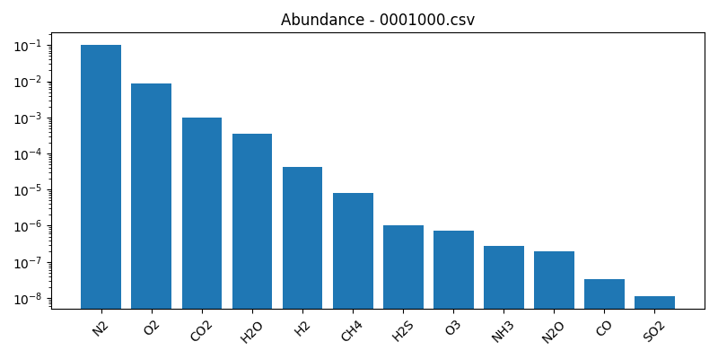

<h1> INARA Atmospheric Prediction Report</h1><h2>Predictions Table</h2><table border="1" class="dataframe">
  <thead>
    <tr style="text-align: right;">
      <th>file</th>
      <th>H2O</th>
      <th>CO2</th>
      <th>O2</th>
      <th>O3</th>
      <th>CH4</th>
      <th>N2</th>
      <th>N2O</th>
      <th>CO</th>
      <th>H2</th>
      <th>H2S</th>
      <th>SO2</th>
      <th>NH3</th>
    </tr>
  </thead>
  <tbody>
    <tr>
      <td>0001000.csv</td>
      <td>-3.445618</td>
      <td>-3.001664</td>
      <td>-2.05142</td>
      <td>-6.146713</td>
      <td>-5.094898</td>
      <td>-1.000742</td>
      <td>-6.711851</td>
      <td>-7.486832</td>
      <td>-4.383646</td>
      <td>-5.977333</td>
      <td>-7.953286</td>
      <td>-6.56141</td>
    </tr>
  </tbody>
</table><h2>Sample Visualizations</h2><h3>0001000.csv</h3>